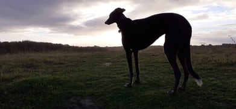
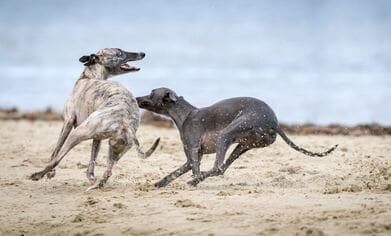
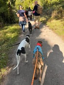

Thanks for visiting the Homes for Hounds website. To learn more about what we do and how you can get involved take a look at our About Us page.
You will also find lots of articles on how to care for your dog and fun facts about greyhounds.
Once you are happy a greyhound is the right dog for you go and Meet our Dogs. The website is updated regularly so make sure you keep checking back to see our new arrivals!
Adopting Edie is the best thing we have ever done. She came to us not knowing anything other
than kennel life but she has adapted brilliantly and is now a part of the family. To anybody
looking at adopting a greyhound we say go for it! you won't regret it.
Lucy and Richard,
Cardiff
We are always in need of help looking after our dogs or raising money through fundraising.
If you could spare some time to take one of our dogs for a walk or transport them on vet visits please contact us through the Get in Touch page.
Alternatively you may want to organise a plant sale or raffle to raise much needed funds to care for our dogs.
Whatever you choose to do our dogs will be very grateful for your support.
25/06/23 **Save the date** This years Great Global Greyhound Walk will take place on 24/10/23. Check out the website to find a walk in your area Great Global Greyhound Walk.
25/06/23 New arrivals! Please check out our new arrivals on the Meet our Dogs page.
01/05/23 Open day at the centre, why not come along and meet our hounds. Fun activities for all the family.
14/04/23 Thank you to our wonderful volunteers who have raised a staggering £1,374 through fund-raising activities including a cake sale and sponsored bicycle ride. Well done to you all.
01/01/23 Happy New Year from all the hounds! Here's hoping they all find new homes in 2023.
25/12/22 Merry Christmas. Our hounds are all tucking in to their Christmas dinners - hopefully next Christmas they will all have homes of their own.
24/09/22 There was a fantastic turnout of over 30 sighthounds for the annual Great Global Greyhound Walk. Thanks to all the volunteers who helped to walk them at Cosmeston Park near Cardiff.